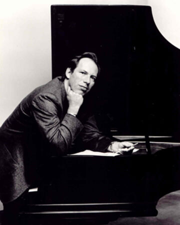
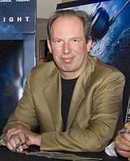

The following information was sourced from "https://en.wikipedia.org/wiki/Hans_Zimmer"

Hans Florian Zimmer (German pronunciation: [ˈhans ˈfloːʁi̯aːn ˈtsɪmɐ] (About this soundlisten); born 12 September 1957) is a German film score composer and record producer. His works are notable for integrating electronic music sounds with traditional orchestral arrangements. Since the 1980s, Zimmer has composed music for over 150 films. His works include The Lion King (for which he won the Academy Award for Best Original Score in 1995), Crimson Tide, Gladiator, the Pirates of the Caribbean series, The Dark Knight Trilogy, Inception, Interstellar, Dunkirk, and Blade Runner 2049. He has received four Grammy Awards, three Classical BRIT Awards, two Golden Globes, and an Academy Award. He was also named on the list of Top 100 Living Geniuses, published by The Daily Telegraph.[1]

Zimmer spent the early part of his career in the United Kingdom before moving to the United States. He is the head of the film music division at DreamWorks studios and works with other composers through the company that he founded, Remote Control Productions,[2] formerly known as Media Ventures. His studio in Santa Monica, California has an extensive range of computer equipment and keyboards, allowing demo versions of film scores to be created quickly.[3] Zimmer has collaborated on multiple projects with directors including Ridley Scott, Ron Howard, Gore Verbinski, Michael Bay, Guy Ritchie and Christopher Nolan.
Early life
Zimmer was born in Frankfurt, West Germany. As a young child, he lived in Königstein-Falkenstein, where he played the piano at home but had piano lessons only briefly, as he disliked the discipline of formal lessons.[4] In one of his Reddit AMAs, he said: "My formal training was two weeks of piano lessons. I was thrown out of eight schools. But I joined a band. I am self-taught. But I've always heard music in my head. And I'm a child of the 20th century; computers came in very handy."[5] Zimmer attended the Ecole D'Humanité, an international boarding school in Canton Bern, Switzerland.[6] He moved to London as a teenager, where he attended Hurtwood House school.[7] During his childhood, he was strongly influenced by the film scores of Ennio Morricone and has cited Once Upon a Time in the West as the score that inspired him to become a film composer.[8]
In a speech at the 1999 Berlin Film Festival, Zimmer stated that he is Jewish, and talked about his mother surviving World War II thanks to her escape from Germany to England in 1939.[9] In an interview with Mashable in February 2013, he said of his parents: "My mother was very musical, basically a musician and my father was an engineer and an inventor. So I grew up modifying the piano, shall we say, which made my mother gasp in horror, and my father would think it was fantastic when I would attach chainsaws and stuff like that to the piano because he thought it was an evolution in technology."[10] In an interview with the German television station ZDF in 2006, he commented: "My father died when I was just a child, and I escaped somehow into the music and music has been my best friend."